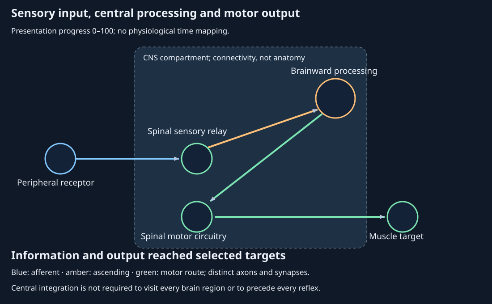
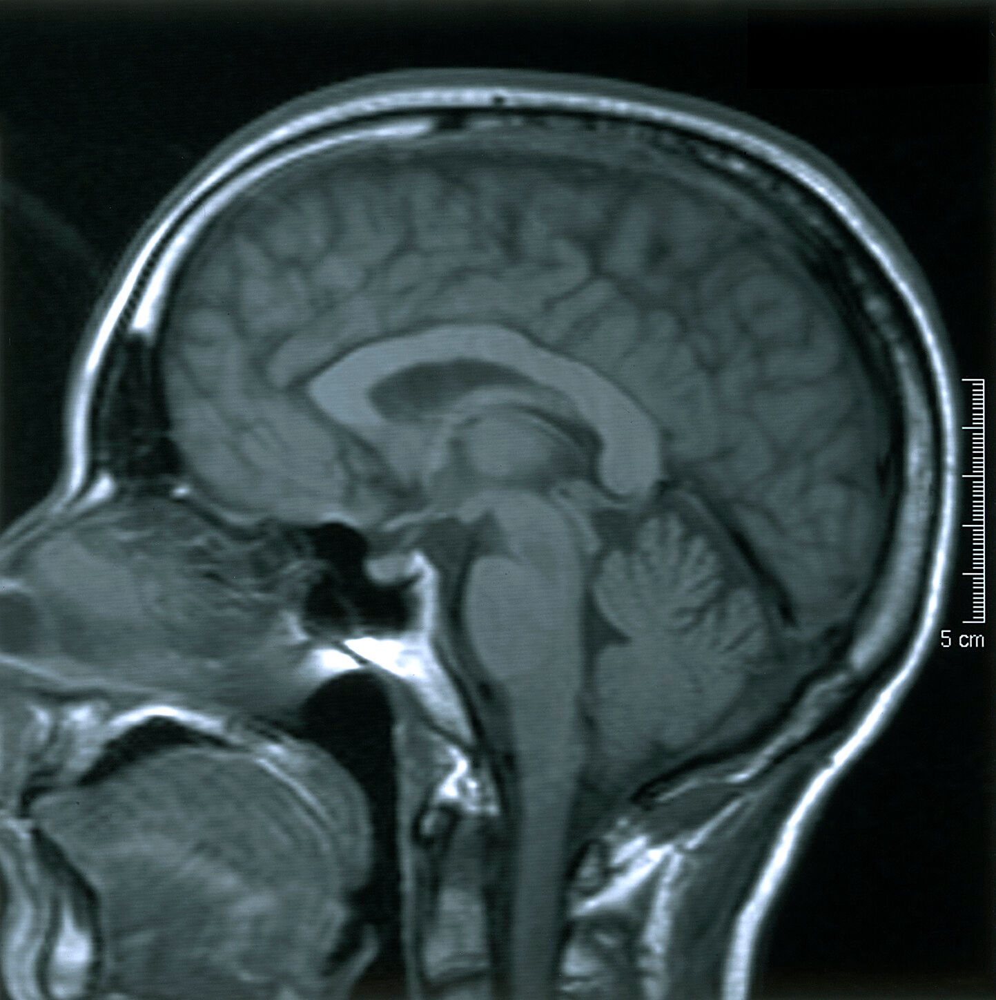
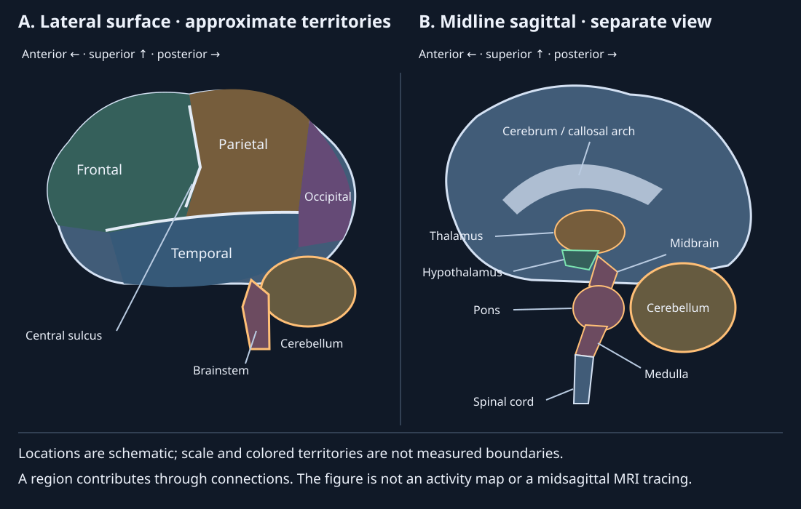
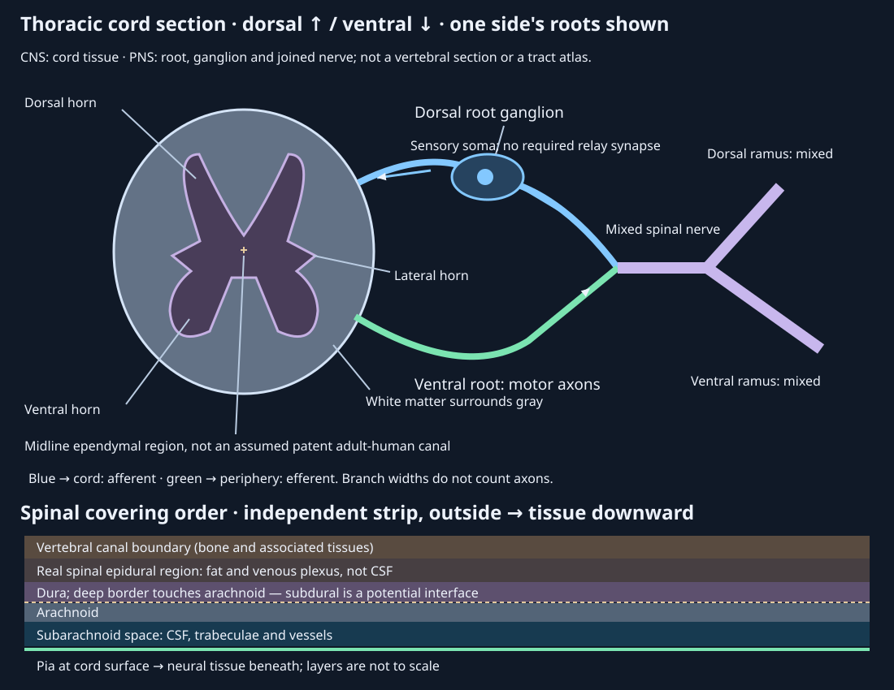
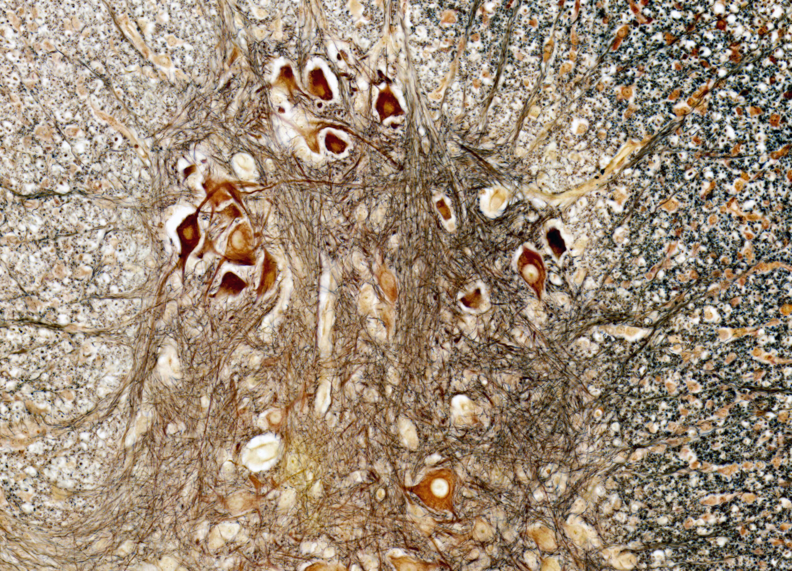
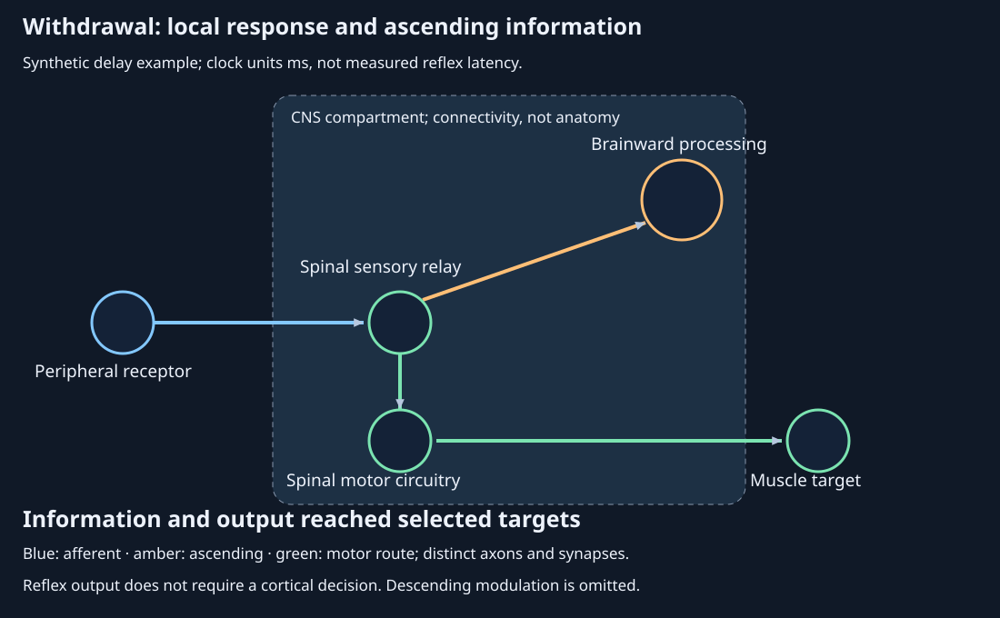

22. Nervous-system organization: brain, spinal cord and nerves
A hand touches a hot surface and begins to withdraw. Information also travels toward the brain, where the event can enter awareness and change the next action. A second person has difficulty moving the left eye outward, yet can move the same eye in other directions. Explaining either observation requires a route: which cells carry the signal, which boundary it crosses, where it can branch, and which structure the final axon reaches. A list of brain regions cannot answer those questions by itself.
The organizing model is a directed pathway embedded in named anatomical compartments. Its nodes are receptors, neuronal processing sites and effectors; its edges represent axonal communication or a specified synaptic connection. A node can send information down several edges. This modest model lets us separate location from direction, a local response from ascending information, and a candidate nerve from a demonstrated lesion. It does not calculate membrane voltage, reconstruct a person's connectome or diagnose the examples.
22.1 Classify the compartment, then follow the direction L51 01:05
A neuron is a cell; a nerve is a tissue bundle
A neuron is an excitable cell specialized for receiving, integrating and transmitting signals. A sensory receptor detects a stimulus and initiates sensory signaling; it may be a specialized neuronal ending or a separate receptor cell communicating with a neuron. A molecular receptor, in contrast, is a protein that responds to a chemical or other signal. A neuron's soma is its cell body, containing the nucleus; dendrites are receptive processes, and an axon is the process that carries signals toward its terminals. These names describe a useful cellular organization, not a rule that every signal in every neuron follows one simple tree. A synapse is a specialized communication junction between cells. Chemical synapses release a transmitter into a small extracellular gap; the receiving cell's molecular receptors determine its response.
Glia are diverse nonneuronal cells that support and regulate neural tissue, including its extracellular environment, immune surveillance and axonal insulation. Myelin is a multilayered glial membrane sheath around selected axon segments. Oligodendrocytes form CNS myelin; Schwann cells form peripheral myelin and also support unmyelinated peripheral axons. Glia are active participants in tissue function, rather than inert packing material.
A peripheral nerve contains bundles of axons with their associated glia, connective tissue and blood vessels. It is not a coil of whole neurons. Many of the cell bodies supplying those axons lie some distance away. A ganglion is a collection of neuronal cell bodies in the peripheral nervous system. Within the central nervous system, a comparable cell-body grouping is generally called a nucleus; here that word names a neural group, rather than the organelle inside one cell. A tract is a CNS axon pathway. These distinctions explain why damage to a bundle can interrupt several kinds of signals without destroying all their originating cell bodies. Peripheral nerve and ganglion anatomy.
Three questions that require different classifications
The central nervous system (CNS) comprises the brain and spinal cord. The peripheral nervous system (PNS) comprises peripheral nerves, ganglia and associated peripheral neural structures. This is a location classification. Cranial nerves need some boundary qualifications, especially the optic pathway, discussed below; the classification is not determined by whether a structure lies inside or outside the skull.
Afferent means carrying information toward a stated reference; efferent means carrying it away. In the usual whole-system classification, the reference is the CNS. A skin sensory axon is therefore afferent, while an axon leaving the cord to activate skeletal muscle is efferent. Sensory input also comes from internal organs: visceral afferents help regulate homeostasis. A mixed nerve can contain both directions at once in different axons. Calling the entire nerve sensory because one message is travelling inward would confuse a message's direction with the bundle's contents.
The motor division is further classified by its targets and organization. Somatic motor pathways innervate skeletal muscle; autonomic motor pathways regulate cardiac muscle, smooth muscle and glands. “Voluntary” and “involuntary” are helpful first associations, but the withdrawal example is somatic despite occurring without a deliberate decision. Autonomic control also involves CNS integration and sensory feedback. Thus CNS/PNS, afferent/efferent and somatic/autonomic answer respectively where, which direction, and what motor organization and target.


Autonomic branches share a relay plan but differ by target
A typical autonomic efferent route uses two neurons. The preganglionic neuron has its soma in the CNS and sends an axon to a peripheral autonomic ganglion. There it synapses on a postganglionic neuron whose axon reaches the effector. At both sympathetic and parasympathetic ganglia the preganglionic transmitter is acetylcholine (ACh). Most sympathetic postganglionic terminals use norepinephrine (NE); parasympathetic postganglionic terminals use ACh. Eccrine sweat glands are a consequential exception: their sympathetic postganglionic supply is cholinergic, meaning it releases ACh. A transmitter name alone therefore does not identify the branch. Autonomic pathway organization; sweat-gland innervation.
The adrenal medulla is a related but different output arrangement. Sympathetic preganglionic ACh stimulates chromaffin cells, the medulla's secretory cells, which release catecholamines, including epinephrine, into blood. A hormone travelling through blood is not a neurotransmitter hopping down a succession of nerves. Likewise, ACh at the skeletal neuromuscular junction does not imply that every preceding CNS synapse uses ACh; Chapter 15 develops that terminal junction separately.
Sympathetic and parasympathetic effects often oppose one another at an organ, as with heart-rate regulation. They are not universal opposites imposed on every tissue. Sympathetic activity commonly supports cardiac acceleration and energy mobilization, while parasympathetic activity supports many digestive and glandular functions. Receptor subtype, organ state and the available innervation matter. Most systemic vessels do not have a matching parasympathetic vasoconstrictor control. Sweating is not simply cancelled by an opposing parasympathetic nerve, and salivary secretion can be influenced by both branches.
The enteric nervous system consists of neural circuits within the gut wall. It can organize local digestive activity while sympathetic, parasympathetic and central signals modulate it. Calling it autonomous does not make it disconnected. In the bladder, parasympathetic activation promotes contraction of the detrusor, the bladder-wall smooth muscle, contributing to emptying; coordinated outlet control also involves other pathways. Emptying stored urine is distinct from the kidneys producing urine. A chart that labels both as “urinary output” hides two different organs and mechanisms. Broad claims that one autonomic branch always contracts or relaxes the uterus are similarly inadequate without hormonal state and receptor context.
Return to the barking dog: threat assessment can recruit sympathetic neural output and adrenal catecholamine release while somatic motor pathways organize running. ACh at sympathetic ganglia, NE at many target terminals and circulating epinephrine belong to different compartments of this response. No single chemical carries the entire perception-to-action sequence. Exercise 22.1 asks you to reconstruct these routes rather than memorize a slogan.
22.2 Brain anatomy constrains a network explanation L52 01:31
A folded organ is not a map of isolated faculties
The cerebrum comprises the two cerebral hemispheres and their cortical and deeper structures. The cerebral cortex is the outer gray-matter sheet; underlying white matter connects cortical areas to each other and to deeper structures. A raised cortical fold is a gyrus, a groove a sulcus, and a prominent separation a fissure. Folding accommodates a large cortical sheet within the head. The geometry alone does not calculate intelligence or show how much a particular fold contributes to cognition.
Adult brain mass is of order 1.4 kg, with substantial individual variation. This approximate scale should not be mistaken for a measurement of the specimen below. The widely quoted 86-billion-neuron figure is a brain estimate, not a count of all neurons throughout the nervous system. Azevedo and colleagues used an isotropic fractionator, counting nuclei in dissociated tissue with neuronal-marker labeling. They reported an average 86.1 ± 8.1 billion cells positive for the neuronal marker NeuN in adult male brains; the marker and tissue-counting method define what was estimated. Neuronal number, tissue mass and volume are different denominators. The cerebellum can contain a large majority of counted neurons while occupying a comparatively small fraction of brain size. Neither packing density nor a cell count by itself ranks the importance of a region. Original cell-count study.
Maintaining neural signaling is metabolically costly even without an overt task. Estimates around one-fifth of resting adult whole-body energy expenditure concern a physiological denominator, not a fixed share of every meal or a universal fraction of glucose at all ages and states. A shortage of blood glucose is hypoglycemia; insufficient tissue oxygen is hypoxia. Either can impair brain function, but the words are not interchangeable and one does not define the other. The blood–brain barrier is a regulated interface, principally involving specialized microvascular endothelium and associated cells, rather than an impermeable shell outside the brain. Detailed cellular barriers belong to the later glial discussion. Brain energy and functional-imaging context.

Locate a contribution without assigning the whole task to it
Anterior and posterior mean toward the front and back; superior and inferior mean above and below in the upright human anatomical reference. Lateral means toward the side, medial toward the midline. A sagittal section divides left from right; a midsagittal section follows the midline. The MRI and lateral schematic are different views: structures hidden beneath the lateral surface do not become surface landmarks merely because a label names them.
The frontal lobe lies anterior to the central sulcus. Its precentral gyrus includes primary motor cortex, contributing to descending movement control. More anterior prefrontal regions contribute to planning, working memory and inhibition of inappropriate responses. Speech production involves a distributed network, including inferior frontal regions often termed Broca's area. A lesion can interfere with a contribution without showing that all planning or all speech resides in one location.
The parietal lobe lies behind the central sulcus. Primary somatosensory cortex in the postcentral gyrus receives organized bodily information, while wider parietal networks contribute to spatial attention and sensorimotor integration. The temporal lobe lies inferior to the lateral sulcus and much of the parietal surface; its networks contribute to auditory processing, language and object recognition. The hippocampal formation and amygdala occupy deep medial temporal regions and contribute respectively to memory and affective learning, among other functions. They are not synonyms for the entire temporal lobe.
The occipital lobe is posterior and contains primary visual cortex and other visual areas. Recognition continues through connected temporal and parietal systems. A face-recognition problem cannot be assigned to occipital cortex solely because the stimulus is visual. Cortical lobes are useful anatomical addresses; functions depend on circuits extending across those addresses. The corpus callosum, a major commissural white-matter structure, connects the hemispheres. A commissure crosses the midline between related sides. Gross cerebral organization.

Relays, regulation and coordination
The diencephalon includes the thalamus and hypothalamus. Thalamic nuclei participate in sensory, motor and cognitive loops; many sensory routes reach cortex through thalamic relays. The initial olfactory route is an important exception to a claim that every sensory input must first pass through thalamus. The hypothalamus links internal state to autonomic, behavioral and endocrine responses, including temperature regulation and pituitary control. It is neural tissue with multiple outputs, not merely a precursor endocrine gland.
The brainstem consists of midbrain, pons and medulla, continuing inferiorly into the spinal cord. These regions contain nuclei and passing pathways, including circuits contributing to eye movement, arousal, breathing and cardiovascular regulation. The pons is a named region between midbrain and medulla, not an unnamed relay. Vital functions involve interacting circuits, so the familiar “breathing center” label should not suggest one independent switch. Describing the brainstem as primitive is evolutionary shorthand; it is not a claim that the modern human brainstem is an unchanged ancestral organ.
The cerebellum lies posterior to the brainstem. Its connections support coordination, prediction and learning, with contributions extending beyond movement. Balance also uses vestibular, brainstem, spinal and sensory systems. In the running case, cerebellar contributions to adjustment are compatible with a local spinal withdrawal route; they do not replace it. Deep cerebral basal ganglia, historically named despite their CNS location, participate in movement and learning loops. The term limbic system is a historical functional grouping involving structures such as hippocampus, amygdala, cingulate cortex and hypothalamus, with variable boundaries. It is not a fifth sealed chamber or one sharply bounded organ for emotion.
Laterality and learning require a task and a measurement
Lateralization means unequal participation of the two sides in a specified function; it does not rank one hemisphere as globally dominant. Language is often left lateralized, including in many left-handed people. Functional magnetic resonance imaging (fMRI) measures hemodynamic signals related to neural activity, rather than directly counting firing neurons. In an fMRI study of 50 non-right-handed participants, 39 had predominantly left-sided language activation, seven were symmetric and four predominantly right-sided. That result rules out a deterministic handedness-to-language-side rule. It remains conditional on the participants, activation tasks and analysis, and it cannot identify an individual's language organization from hand preference. Original fMRI study, abstract accessed.
Plasticity is the capacity of neural structure or function to change with experience or other influences. Learning a sequence on a musical instrument can initially require attention, explicit strategy, sensory monitoring and correction. With practice, performance may depend differently on sensorimotor, cerebellar and cortico-striatal networks. A human finger-sequence study followed changes in basal-ganglia participation over a month of training; its result does not supply a universal movie of every learned skill. Learning a language has additional auditory, semantic and communicative demands. Neither task becomes localized to a single “habit area” once it feels easy. Original motor-sequence learning study.
Development also has several trajectories. Cortical thickness, white-matter properties, network measures and task performance do not reach identical endpoints at one birthday. Lifespan MRI charts assembled from many studies describe nonlinear, measure-specific changes and individual variation; they do not establish that everyone is fully developed at age 25 or that behavior follows directly from one scan. Adult plasticity continues against that changing background. Exercise 22.5 turns the closing skill-learning prompt into a question about evidence and competing interpretations. Original lifespan brain-chart study.
Protection depends on the right space
The meninges are the dura mater, arachnoid mater and pia mater surrounding the CNS. Cranial dura has an outer periosteal layer attached to the skull and an inner meningeal layer. Their separations can form dural venous sinuses, channels carrying blood. Arachnoid lies deeper; pia closely follows the brain surface into grooves. The subarachnoid space, between arachnoid and pia, normally contains cerebrospinal fluid (CSF) and blood vessels. The subdural interface between dura and arachnoid is a potential space, rather than a normally open CSF reservoir. A sinus containing venous blood is not the same compartment as the subarachnoid fluid around it.
CSF is produced principally by choroid plexuses in the brain's ventricles, interconnected fluid cavities. It reaches the external subarachnoid spaces through openings from the fourth ventricle. CSF provides mechanical support and participates in fluid and solute exchange; it does not replace the vascular supply of oxygen and metabolic substrates. In the vertebral canal there is a genuine epidural region outside spinal dura containing fat and vessels. Spinal dura is the continuation of the meningeal dural layer; the cranial periosteal layer does not simply continue as a second spinal dural layer. The section below keeps these differences explicit. Spinal meningeal compartments; cranial coverings and CSF routes.
22.3 Cord, roots and named nerves constrain the route L53 02:30 · L51 12:07
A cross section needs a level and an orientation
The spinal cord is CNS tissue within the vertebral canal, not the column of vertebral bones itself. In an adult, the cord normally ends near the upper lumbar vertebral level; lower lumbar and sacral roots continue downward within the canal before exiting. Their descending bundle is the cauda equina. A spinal segment is the cord region associated with a pair of spinal nerves. Segment identity, vertebral level and peripheral exit location therefore need not coincide.
In a transverse cord section, gray matter forms the central horned region, rich in neuronal somata, dendrites, synapses, axons and glia. Surrounding white matter is rich in longitudinal axons, many myelinated. These are relative compositions: gray matter is not devoid of myelin or lipid, and white matter is not made only of myelin. Dorsal means toward the back and ventral toward the front in this cord reference. Dorsal horns participate in processing sensory input; ventral horns contain somatic motor neuron cell bodies. Intermediate gray matter includes autonomic circuitry. The proportions and shapes vary along the cord.
Thoracic and upper lumbar segments contain sympathetic preganglionic neurons in the intermediolateral region, often drawn as a lateral horn at T1–L2. Sacral parasympathetic neurons lie in a different intermediate-gray distribution at S2–S4; they should not be put into the same thoracic lateral-horn label. Not every sensory axon must synapse immediately in the dorsal horn: some send branches into longitudinal pathways. Nor does every motor command originate in a ventral horn; descending pathways influence the spinal neurons whose axons provide the final somatic output.
The central canal is a developmental midline lumen and a useful landmark in many species and teaching sections. Its patency cannot be assumed in adult humans. An MRI/histological study included 59 controls, 99 traumatic-injury and 26 nontraumatic-injury cases and found lack of a patent canal in the great majority of adults beyond 18. This finding does not remove the external CSF-containing subarachnoid space. The drawing marks a midline ependymal region without pretending that every adult cord contains an open fluid pipe. The ependymal region refers to the cells and tissue associated with that developmental lining. Original adult-human MRI and histology study.


Separate a root, a mixed nerve and a plexus
A dorsal root carries sensory axons into the cord. Its dorsal root ganglion contains sensory neuron somata; the peripheral and central axon branches communicate past that cell-body region without a required ganglionic synapse. A ventral root carries axons out, including somatic motor axons and autonomic preganglionic axons at the appropriate levels. The two roots join as a short mixed spinal nerve. The nerve then divides into rami, branches that remain mixed. “Dorsal root is sensory” does not imply “dorsal ramus is sensory”: root and ramus name different portions of the route.
There are conventionally 31 spinal nerve pairs: eight cervical (C1–C8), twelve thoracic (T1–T12), five lumbar (L1–L5), five sacral (S1–S5) and one coccygeal. The count is pairs, not individual nerves. Eight cervical pairs coexist with seven cervical vertebrae; C8 exits between C7 and T1. Many ventral rami redistribute their axons through a plexus, a network of intersecting nerve branches. The cervical plexus is usually described from C1–C4, with C5 contributing to the phrenic nerve's C3–C5 supply. The brachial plexus typically draws on C5–T1; lumbar and sacral plexuses distribute lower-limb and pelvic pathways. These are reference patterns with variation, not a rule that every organ in one body region receives one cord level.
The radial, femoral and sciatic nerves are named peripheral bundles downstream of this redistribution, not additional spinal segments. A deficit in a named nerve can differ from a root deficit because each bundle combines axons from several roots, and one root distributes through several nerves. The route model makes this an anatomical statement about overlapping edges, rather than a requirement to memorize isolated lists. Roots, nerves and plexus organization.
Ascending and descending do not specify the crossing
An ascending tract carries information toward more rostral CNS regions; a descending tract carries it toward more caudal regions. Rostral and caudal here mean toward brain and toward lower cord, respectively. Ipsilateral means on the same side of a stated reference; contralateral means on the opposite side. A decussation is a crossing of fibers. Without the reference and crossing level, “left signal” or “ascending sensory pathway” does not tell us the side of its later representation.
| Pathway | Main teaching role | Essential qualification |
|---|---|---|
| Dorsal column–medial lemniscus | Discriminative touch, vibration and conscious proprioception, the sense of body position | Major primary branches ascend ipsilaterally in cord; second-order fibers cross in medulla. Gracile/cuneate subdivisions depend on the levels represented. |
| Anterolateral / spinothalamic system | Pain and temperature information among its modalities | Many second-order axons cross within the cord near entry level; this is not the dorsal-column crossing. |
| Spinocerebellar pathways | Information relevant to ongoing movement and body state | Several routes with different crossings; no single universal crossing arrow is claimed. |
| Lateral corticospinal | Descending control, especially skilled limb movement | Most component fibers cross at the caudal medullary pyramidal decussation; spinal circuitry and other pathways also contribute. |
| Vestibulospinal, reticulospinal, tectospinal and rubrospinal examples | Postural, orienting and movement-related descending influences | Distinct origins and roles; the rubrospinal contribution is species-dependent and relatively limited in humans. These are not all one tract. |
The table is an index to routes, not an atlas of fixed colored spots at every spinal level. A cord section at a different level contains different numbers and arrangements of passing fibers. For the hand-withdrawal example, incoming nociceptive information, meaning information related to potentially tissue-damaging stimuli, can recruit spinal interneurons and also ascend through additional neurons. A spinal interneuron is a neuron whose local CNS connections mediate processing between other neurons; its operation is not a detour through a peripheral ganglion. Dorsal-column pathway reference; descending and spinal motor organization.
A local withdrawal does not erase ascending information
A simplified withdrawal circuit sends sensory input to excitatory spinal circuitry driving a flexor motor pool, a group of motor neurons supplying a flexor muscle. Parallel inhibitory circuitry reduces antagonist motor-neuron activity, helping withdrawal proceed. The inhibitory action is on spinal neurons; a skeletal neuromuscular junction does not release an inhibitory command that makes a muscle actively relax. Withdrawal is polysynaptic, meaning it involves multiple central synapses. A monosynaptic stretch-reflex connection is a different circuit and should not substitute for it.
The sensory input can concurrently recruit ascending pathways. Local spinal processing can initiate output without waiting for a cortical decision, while brainward processing contributes to perception and subsequent behavior. Descending systems can also modulate spinal responsiveness. These statements are compatible: independence from a required cortical decision is not absence of brain information or central influence. The mechanism does not guarantee one latency ordering for every stimulus, fiber population or measurement endpoint.


A small calculation tests the topology, not physiology
For one illustrative path, let length \(L\) be in metres and constant conduction speed \(v\) in metres per second. Let \(d\) be a lumped additional processing delay in milliseconds. Under these deliberately simplified assumptions, the transit time in milliseconds is \(1000L/v\). For serial segments, add their transit times and delays. At a branch, each outgoing route inherits the arrival time at the branch; it does not wait for the other route to finish.
Write \(L_a,v_a\) for the incoming afferent segment, \(L_m,v_m\) for the outgoing motor segment and \(L_b,v_b\) for a brainward segment. Let \(d_s\) represent local spinal processing, \(d_e\) the chosen effector delay and \(d_b\) additional central processing. The endpoint times are then
Choose synthetic values \(L_a=0.6\), \(v_a=30\), \(L_m=0.5\), \(v_m=50\), \(L_b=1\), \(v_b=20\), with lengths and speeds in the units above, and delays \(d_s=4\), \(d_e=5\), \(d_b=6\) ms. Incoming transit is 20 ms. The selected effector endpoint is \(20+4+10+5=39\) ms; the selected central endpoint is \(20+50+6=76\) ms. These endpoints are definitions inside the example, not measured movement onset and conscious pain time. Changing only the brainward path leaves 39 unchanged; a serial brain-then-muscle model would fail that structural test. Conversely, another choice of lengths and speeds could change the ordering, which the equation permits.
Python bookkeeping and the shared browser model implement these objects. Lengths are restricted to 0–10 m, speeds to 0.1–200 m/s and each lumped delay to 0–100 ms, all finite. These are enforced numerical teaching bounds, not a catalog of physiological ranges. The functions reject unknown fields and invalid values; they return endpoint times without changing files. They omit receptor transduction, fiber recruitment, distributions of conduction speed, membrane dynamics, detailed interneurons, descending state and mechanical movement. The animation uses only the printed default case; custom calculations do not silently retime its preset scene.
Cranial nerve names identify routes, with important exceptions
Twelve conventionally numbered cranial nerve pairs are denoted CN I–XII. Most connect to brainstem structures, but CN I involves the olfactory forebrain, CN II is a CNS visual pathway, and the spinal component of CN XI originates in upper cervical cord. Cranial nerve labels therefore do not mean that every component emerges from the brainstem or is ordinary peripheral nerve tissue. The optic nerve has CNS coverings and myelination; olfactory structures also span a peripheral–central transition.
| CN | Name / broad class | Selected function and connection |
|---|---|---|
| I | Olfactory · sensory | Smell; peripheral olfactory receptor axons reach olfactory bulbs of the forebrain. |
| II | Optic · sensory | Vision; retinal ganglion-cell axons form a CNS pathway. |
| III | Oculomotor · motor | Most extraocular movements, upper-eyelid elevation; parasympathetic pupil/ciliary control via a ganglion. |
| IV | Trochlear · motor | Superior oblique muscle; midbrain connection. |
| V | Trigeminal · mixed | Major facial somatic sensation and mastication; ophthalmic, maxillary and mandibular divisions. |
| VI | Abducens · motor | Lateral rectus, turning the eye outward; pontine nucleus. |
| VII | Facial · mixed | Facial expression, anterior-tongue taste; parasympathetic lacrimal and selected salivary outputs. |
| VIII | Vestibulocochlear · sensory | Hearing and balance; vestibular/cochlear connections near the pontomedullary region. |
| IX | Glossopharyngeal · mixed | Posterior-tongue taste and pharyngeal sensation; stylopharyngeus motor and parotid parasympathetic output. |
| X | Vagus · mixed | Visceral afferents, pharyngeal/laryngeal motor and extensive thoracoabdominal parasympathetic outputs; medullary connections. |
| XI | Accessory · motor | Spinal component supplies sternocleidomastoid and trapezius for head/shoulder movement. |
| XII | Hypoglossal · motor | Most tongue muscles; medullary nucleus. Palatoglossus is a vagal exception. |
CN V, VII, IX and X are mixed in this introductory grouping. CN III also carries a parasympathetic motor component, so “motor” does not mean “only skeletal-muscle axons.” Sensory ganglia are cell-body groups distinct from central nuclei and from autonomic relay ganglia. CN X reaches far beyond head and neck, defeating another overly simple cranial-versus-spinal contrast. Cranial classification; original human tongue nerve-supply study.
Loss of smell suggests an olfactory-route problem; failure of left-eye abduction raises the left lateral-rectus/CN VI route; left facial weakness raises facial motor pathways. These are candidates, not a demonstrated single lesion. Smell laterality is unspecified, eye-movement failure has muscular and central alternatives, and the facial pattern must distinguish upper/lower face and other signs. Anatomical reasoning narrows the next questions; it cannot manufacture missing examination data. Exercise 22.6 develops the closing prompt with those limits intact.
22.4 Worked problems
Exercise 22.1 — A barking dog and three chemical compartments
A dog barks and runs toward a walker. The walker starts running, the heart accelerates and sweating increases. Identify the motor organizations involved and trace where ACh, NE and epinephrine can act. Explain why “sympathetic means norepinephrine everywhere” and “running is autonomic because it happens quickly” both fail.
Worked solution
The threat can recruit sympathetic autonomic output and somatic skeletal-motor output together. Somatic motor neurons innervate the muscles used to run; their terminals release ACh at neuromuscular junctions. The speed or emotional context of the action does not turn skeletal-muscle innervation into autonomic innervation.
For a typical sympathetic target, the CNS preganglionic neuron releases ACh onto a ganglionic neuron, and the postganglionic neuron releases NE at the organ. In the adrenal branch, preganglionic ACh activates chromaffin cells; epinephrine then travels through blood as a hormone. Eccrine sweating supplies the counterexample to an NE-only sympathetic rule: its postganglionic sympathetic terminals release ACh. The central perception and planning routes include additional transmitters, not one ACh molecule travelling from brain to leg. We have specified circuit organization and signal compartments, without deriving an individual's heart rate or secretion amount.
Exercise 22.2 — A normal space, a potential interface and a misleading pipe
Correct this proposed cord diagram: “Two dural layers surround an open subdural CSF chamber; white matter contains all the fat, gray matter contains none, and a patent central canal carries CSF along every adult human cord.” Which normal CSF compartment should the diagram preserve?
Worked solution
The two-layer cranial description should not be copied directly into spinal dura. The spinal dural sac continues the meningeal layer, with a real epidural region outside it. At the dura–arachnoid boundary, subdural space is potential; it should not be rendered as an ordinarily open fluid chamber. The normal external CSF space is subarachnoid, between arachnoid and pia, with pia closely following the cord surface.
White and gray matter are relative tissue compositions. White matter is rich in myelinated axons; gray matter includes somata, dendrites, synapses, glia and axons, with some myelin. Lipid is not absent from gray matter. Finally, a central canal is a developmental and comparative-anatomical landmark, but adult-human patency is often absent. Mark the midline ependymal region and state age/species context; do not infer a patent canal from a cartoon or the rat micrograph. External subarachnoid CSF remains present despite that central difference.
Exercise 22.3 — Does a brainward delay belong in the withdrawal sum?
Use the synthetic lengths, speeds and delays in Equation 22.1. Calculate the selected local effector and central endpoints. Then halve the ascending speed alone. Which endpoint changes, and what incorrect topology would make both change?
Worked solution
Incoming conduction contributes \(1000(0.6)/30=20\) ms. Local processing adds 4 ms; motor conduction adds \(1000(0.5)/50=10\) ms; the selected effector delay adds 5 ms. Thus \(T_e=39\) ms. The brainward segment contributes \(1000(1)/20=50\) ms, giving \(T_b=20+50+6=76\) ms.
Halving ascending speed to 10 m/s makes its transit 100 ms and gives \(T_b=126\) ms. The local endpoint stays 39 ms, because its path has not changed. Adding the central endpoint delay to the local sum would silently replace the branch with a serial brain-before-motor route. That would be a different circuit. These supplied numbers illustrate path dependence; they do not establish measured withdrawal latency or awareness onset. The animation's preset still shows the original 20 m/s case, whereas the code can compute the modified parameters separately.
Exercise 22.4 — Roots, rami, crossings and counts
A student calls a dorsal ramus purely sensory and concludes that every ascending signal is contralateral immediately on entering the cord. Explain both errors, total the spinal nerve pairs, and compare the cord-side routes of left lower-limb discriminative touch and a pain-related ascending example.
Worked solution
The dorsal sensory root is before the junction with the ventral motor root. The joined spinal nerve is mixed and its dorsal and ventral rami remain mixed. A similarly named branch downstream is not functionally identical to the original root. The pair count is \(8+12+5+5+1=31\), or 62 individual left/right nerves under this conventional count; the final one is coccygeal.
For the selected dorsal-column route, primary left lower-limb mechanosensory axons ascend in the left cord toward the medulla, where the second-order pathway crosses. For the selected anterolateral pain/temperature route, a dorsal-horn relay can give rise to fibers crossing near entry level in the cord and then ascending on the opposite side. The relevant neuron, modality and level differ. “Ascending” specifies a longitudinal direction and says nothing by itself about crossing. Neither simplified route fully specifies all branches or allows a diagnosis from one hypothetical sensory complaint.
Exercise 22.5 — What evidence would show skill learning?
A left-handed learner improves on a piano sequence. A scan shows less prefrontal activation after practice. Someone concludes that language must be right-sided, the frontal lobe has become unnecessary, and the sequence is now stored entirely in the cerebellum. Assess these conclusions and propose a comparison that would distinguish learning from doing an easier task.
Worked solution
Hand preference does not determine the hemisphere of language. The source fMRI sample explicitly included predominantly left-sided language activation in many non-right-handed participants. The piano task also is not a language-localization task. Lower task-related prefrontal activation can reflect changed strategy, attention, difficulty or performance; it does not demonstrate that the region has no remaining causal role.
Motor learning involves interacting cortical, striatal and cerebellar networks, with task-dependent changes. Neither better performance nor one regional signal proves an exclusive storage location. Compare the trained sequence with a matched untrained sequence, measuring errors, speed and task conditions before and after practice. Control for movement rate and sensory demands, and test retention or transfer separately from immediate performance. The resulting evidence could support a learning-related network change, while causal necessity would require additional evidence. For language learning, choose language-specific tasks and controls instead of assuming the same sequence-learning route.
Exercise 22.6 — Localize cautiously from the closing cranial-nerve prompt
A hypothetical person has loss of smell, difficulty moving the left eye laterally and left facial droop. Name the first cranial routes to examine and explain why the three observations do not establish one lesion. What extra anatomical information is missing?
Worked solution
Loss of smell suggests examining the olfactory/CN I route, although smell side and nasal/receptor conditions are unspecified. Outward movement of the left eye is abduction, produced by its lateral rectus muscle; left CN VI and its muscle/central control route are candidates. Facial expression uses CN VII motor pathways, so a left facial deficit directs attention to that route, while its exact pattern matters.
These candidates span different anatomical relationships. The olfactory forebrain route, pontine eye-movement pathway and facial pathway are not demonstrated to share one small lesion merely because their symptoms were listed together. We would need the upper-versus-lower facial distribution, associated eye movements and pupils, sensory findings, timing, and evidence separating peripheral muscle/nerve problems from central control. The task supports structured localization questions, not a patient diagnosis. It also illustrates why CN X must remain in the mixed classification even though it is not a candidate for these particular signs: classification is based on fibers and targets, not which nerves happen to appear in one example.
22.5 Reproduce the route bookkeeping
Run python code/ch22_pathways.py --check for the default-arrival and domain checks, or run it without arguments to print the six default event times. In a Python session, latency({'ascendingVelocity': 10}) after importing the function returns the modified central endpoint 126 ms while preserving the local effector endpoint 39 ms. All calculations use supplied synthetic parameters, not measurements extracted from the images. The JavaScript checks examine shared states, endpoints, domains and Python parity; the exporter regenerates the two static pathways and saved default states.
The formal model preserves direction, branching and compartment identity. It deliberately leaves out most cellular and mechanical dynamics. Anatomy constrains which route is possible; latency bookkeeping checks which assumed delays belong to it; imaging supplies observed structure under a stated modality. Agreement among those representations is useful, but none alone proves a person's neural mechanism or clinical condition.
Source coverage: official L51–53, all 40 assigned topics and all three closing activities. Full captions were read. The inherited source-image audit inspected nine contact sheets (162 sampled frames) and 26 selected native repeats; this is partial visual coverage, not continuous video/audio or original-slide access. Lecture artwork is not reproduced. Corrections and research extensions are linked beside their claims; the latency example and schematic renderers are original teaching constructions. Image credits, licences and limitations are in the provenance record and licence notice. External research was checked on 2026-11-04; access depth is recorded privately without claiming unseen methods or footage.